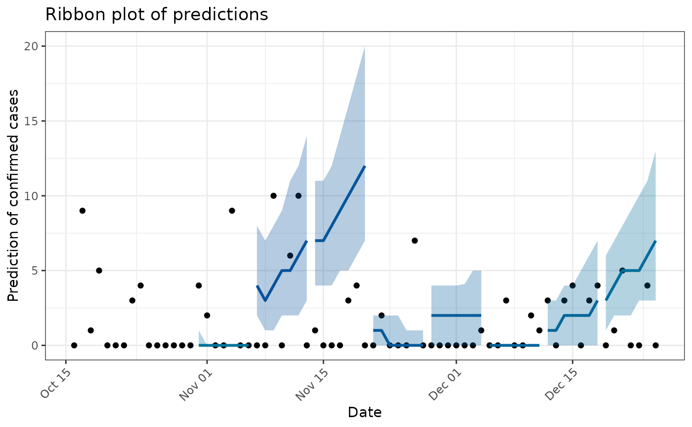

Plot a ribbon plot with each time horizon predictions against true values for validation
Source:R/plotting.R
plot_validation.RdPlot a ribbon plot with each time horizon predictions against true values for validation
Arguments
- data
A data frame used in
generate_validation(), containing the original training data used for model fitting. Must include:date: Dates of the observed data (classDate).confirm: Numeric values of confirmed cases.
- validation_res
A list of forecast validation results, typically produced by
generate_validation(). Each element should include:forecast_res_quantiles: A data frame containing forecasted quantiles (p025,p10,p25,p50,p75,p90,p975, anddate).estimate_R: A list with estimated reproduction numbers (used for grouping).smoothed_data: (optional) A data frame of smoothed observations, if smoothing was applied before forecasting.
- pred_plot
either
"ribbon"or"error_bar"(by default) to produce either ribbon prediction plots or error_bar plots respectively
Examples
data <- simulate_data()
formatted_data <- get_aggregated_data(data,"date", "flu_a", "2024-10-16", "2024-12-31")
start_date <- ("2024-10-16")
validation_results <- generate_validation(formatted_data, start_date, type ="flu_a")
plot_validation(formatted_data, validation_results)
